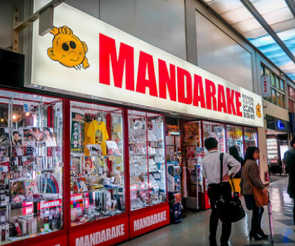
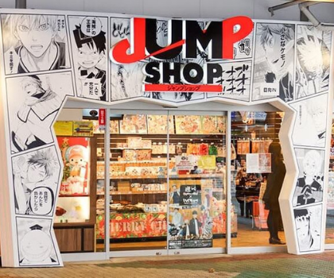
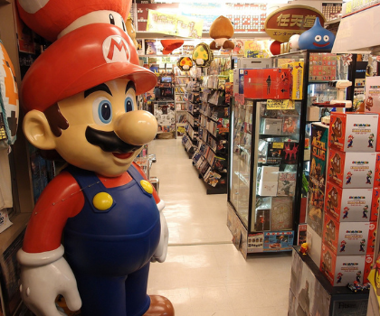
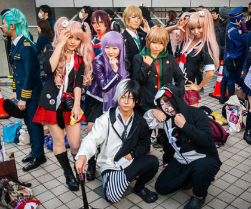
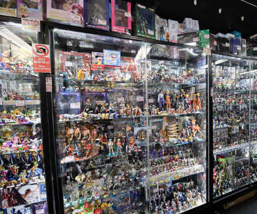

Akihabara is dotted with game centers big and small, but the one that we love the most is Club Sega’s Akihabara Building No. 1. It has been renovated in 2012 and sets itself off with a fancier, more modern appearance than many of the area’s other game centers. So this Club Sega is the perfect spot for both gamers and the curious.

Mandarake shop
Mandarake is an 8-floor complex that isn't just a secondhand manga bookstore. Each floor has its own theme and dedicated fanbase. For instance, the sixth floor stocks only CDs, DVDs, and games; while the 7th and 8th floors stock collectible figurines and cards. Many of the games stocked are from the 80s, and prices can go into the hundreds of dollars.

Jumpshop
The Jump Shop has a lot of merchandise from current popular works serializing in Weekly Shonen Jump and Jump SQ. such as: "One Piece", "Gintama", "Haikyuu!!", "My Hero Academia", and more. Shueisha Original goods, anime goods, comics, DVDs, apparel, and even sweets - all are in this Jump merchandise dream shop. They also have many limited merchandise goods unique to the Official Shop.

Super Potato
Located on the 3rd, 4th and 5th floors of a building helpfully decorated in Mario motifs, Super Potato is the place to go for retro gaming. It’s the flagship store of the chain which focuses on retro and vintage games rather than the latest VR headsets, and is much more fun because of it. There’s something for everyone as you wander the aisles of games and merchandise for games of the past and head upstairs to try them out yourself.

Acos Akihabara
At ACOS Akihabara, you can perfect your cosplay costume and have fun doing it!
The word “cosplay” is an English portmanteau combining “costumes” and “play.” When cosplaying, people dress up and perform as their favorite characters from films, comics, anime, and video games. And at ACOS Akihabara, you can find the perfect piece to fulfill your role-playing dream and become one of the characters you love!

Akiba Culture Zone
Akiba Culture Zone, a new 6-floor department store in Akihabara, was recently completed, with all floors now open to the public. The store is devoted to “otaku”-related goods, such as animation character figures and games, manga, idol goods and clothes, among others. The first and second floors are occupied by K-Books, with more than 400,000 comics, books, magazines and games.